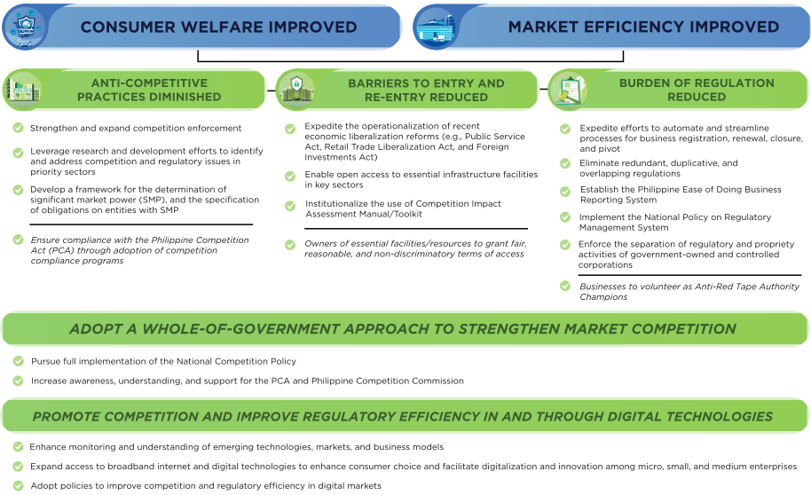

As the country emerges from the coronavirus disease (COVID-19) pandemic, ensuring an open and competitive market economy will be crucial to sustain economic recovery and encourage job creation. Genuine competition and enhanced regulatory efficiency will not only encourage investments and improve infrastructure, but also enable businesses-especially micro, small, and medium enterprises (MSME)-to enter and compete in the market. In turn, market competition and ease of doing business will expand consumer access to affordable, innovative, and high-quality goods and services.
Rapid digital transformation of markets poses new challenges and opportunities for competition enforcement and regulation. One challenge is that rapid digital transformation heightens the tendency and ability of large firms with more access to new digital technologies to consolidate market power. Digitalization facilitates easier coordination among market players (but also, possible collusion) using new and powerful algorithms. This creates new cybersecurity and data privacy risks given the increased use of and access to personal data. Nevertheless, digital technologies enhance competition, thus enabling smaller firms to compete against larger ones, increasing access of citizens to previously out of reach markets. The Philippine Development Plan 2023-2028 emphasizes the full implementation of the Philippine Competition Act through strategies that allow businesses to leverage existing or emerging digital technologies. It will help businesses become more agile, innovative, and competitive by fostering an environment where anticompetitive practices are prevented or penalized, entry and re-entry of players are facilitated, and strategies to promote innovation are supported.
Developments in competition policy and regulatory efficiency. Since the enactment of Republic Act 10667, otherwise known as the Philippine Competition Act (PCA), in July 2015, significant strides in the enhancement of market competition have been achieved. The Philippine Competition Commission (PCC) created under the PCA has conducted more than 200 merger reviews, and imposed remedies on transactions in various trades and industries. It was also able to prevent several businesses from entering into anticompetitive agreements.
In July 2020, the National Economic and Development Authority (NEDA) and the PCC issued Joint Memorandum Circular (JMC) 01-2020 on the National Competition Policy (NCP). Giving more teeth to the JMC, Administrative Order No. 44, series of 2021 was subsequently issued in October 2021. AO 44, s. 2021 mandates a whole-of-government effort in fostering competition through three key elements: (a) pro-competitive policies and government interventions; (b) competitive neutrality; and (c) enforcement of competition-related laws and policies. It likewise provides that compliance with the NCP be integrated in the criteria used in the grant of Performance-Based Bonus (PBB) for government personnel and in the conferment of the Seal of Good Local Governance (SGLG) on local government units (LGU).
Moreover, economy-wide and cross-sectoral reforms were instituted to improve the ease of doing business and eliminate barriers to the entry of domestic and foreign investments. The Anti-Red Tape Authority (ARTA), created in 2018 through the Ease of Doing Business and Efficient Government Service Delivery Act (RA 11032 or EODB-EGSD), led efforts to reduce the burden of regulations. Its flagship program, the National Effort for the Harmonization of Efficient Measures of Inter-related Agencies (NEHEMIA), greatly reduced the time, permits, and other requirements needed in the information and communications technology (ICT), construction, food, pharmaceutical, logistics, and energy sectors. ARTA also released several manuals to improve regulatory efficiency of government agencies, such as the Philippine Good Regulatory Principles, the Regulatory Impact Assessment Manual, and the National Policy on Regulatory Management System (NPRMS). As of June 2022, 784 LGUs have already implemented the Electronic Business One-Stop Shop and 563 cases have been filed against fixers and public employees found in violation of EODB-EGSD.
Meanwhile, Congress has also enacted landmark legislations to attract foreign investment and participation in the economy. A law amending the Retail Trade Liberalization Act (RA 11595) was enacted in December 2021, which lowers the minimum paid-up capital for foreign corporations. Amendments to the Foreign Investments Act (RA 11647) and the Public Service Act (RA 11659) followed in 2022. The Foreign Investments Act liberalizes the practice of certain professions, while the Public Service Act allows full foreign ownership of public services such as telecommunications, railways, expressways, airports, freight forwarding, and shipping.
Several pro-competition developments in key sectors are also noteworthy. The government passed the Mobile Number Portability Act (RA 11202) in 2019 and the common tower and pole policies in 2020 to expand the space for competition in the telecommunications sector. The retail supply segment of the electricity sector was opened to competition. In construction, a 2020 Supreme Court decision struck down the rule imposing a nationality-based restriction on the licensing of foreign contractors. Finally, the Rice Tariffication Act of 2019 (RA 11203) introduced several reforms that are expected to reduce barriers to the importation of rice and curb government intervention in the rice market.
These reforms are expected to boost the country's competitiveness; however, the Philippines still declined in the 2022 Global Competitiveness Index (GCI) rankings from a percentile rank of 59 in 2016 to 55 in 2019. This suggests that more effective regulations are needed to strengthen market competition and improve regulatory efficiency. Based on the World Bank's Entrepreneurship Database, business entry in the Philippines remains limited, with an average of three newly registered businesses per 10,000 working people between 2016 and 2020. Such rate is among the lowest in the Association of Southeast Asian Nations (ASEAN), indicating that there is much room to improve the rate of new firm entry in the Philippines.
Despite the above reforms, several constraints to competition and regulatory efficiency also continue to undermine consumer welfare and market efficiency. Enforcement of competition law and policy has not yet fully addressed anticompetitive behavior and practices, including potential bid-rigging in public procurement. Direct caps and bans on the entry of new firms into some sectors such as transport and logistics still exist. Vertically integrated incumbents, especially in network sectors such as in telecommunications, electricity, and railways, can also make the entry of new firms difficult, if not infeasible.
Meanwhile, high administrative burdens on startups, such as numerous permits and licenses required from multiple agencies, make it costly to enter the market and can unduly constrain business activities. For example, the excessive requirements needed for business registration and renewal, as well as the unnecessary limitations on the scope of activities under these, can prevent the ease of entry and expansion by small players. Price regulations in many markets, including the setting of suggested retail prices for basic commodities, as well as the imposition of non-tariff measures in agricultural products, restrict the ability of firms to compete based on price and to improve efficiency. Beyond these direct regulations, ambiguous and redundant requirements as well as the overlapping mandates of regulatory agencies increase uncertainty and cost of regulatory compliance, making investments less attractive.
Impact of pandemic and prospects for recovery and competition. The exit of many MSMEs due to the COVID-19 pandemic was worrisome from a competition standpoint as the reduction in competition from smaller players could enable larger incumbent firms to become even more dominant. While the total number of establishments increased from 2018 to 2021, the growth was driven by micro-enterprises (10%). Small and medium enterprises, which are more likely to provide stronger competitive constraint to large dominant firms, declined by 11 percent and 9 percent, respectively. In seven out of 18 sectors, the number of MSMEs contracted. MSME growth declined the most in Information and Communication (57%); Education (30%); Arts, Entertainment, and Recreation (23%); and in Administrative and Support Service Activities (22%). 1 Thus, helping MSMEs recover has been central to the stimulus packages passed by Congress.
It should be noted, however, that such short-term relief measures extended to businesses can also have the unintended effect of distorting the playing field and restricting competition. For example, the passage of Bayanihan to Recover as One Act (RA 11494) in September 2020 relaxed regulations to help businesses operate more efficiently during the pandemic. However, it also curtailed the ability of the PCC to review mergers and acquisitions (M&A) below the PHP50 billion threshold value for two years, and suspended its motu proprio powers for a year. During this time, potentially harmful M&As may have gone unchecked, leading to increased market concentration whose effects on competition will be particularly difficult to reverse. Prolonged and widespread lockdowns also had the unintended consequence of limiting the PCC's ability to conduct extensive investigations and dawn raids, advance advocacy and research activities, and monitor far-flung markets.
The public's increased reliance on digital technologies during the pandemic-to study and work, remain in touch with family and friends, purchase goods and services, among many other activities-highlighted the importance of and turbocharged growth in the ICT sector. Public clamor ushered the approval of some long overdue reforms intended to increase competition and improve regulatory efficiency in the ICT sector, including the streamlining of permits to speed up telecommunications infrastructure rollout, liberalizing satellite access to non-telecommunications, and opening telecommunications to full foreign ownership.
Digital transformation, competition, and regulatory efficiency. Increased use of the internet and digital technologies also allowed new and small players to reach consumers and access new markets. Studies have shown that the diffusion of the internet and the adoption of e-commerce can increase competition in goods and services. 2,3 Thus, policies that enable broader usage and participation in digital ecosystems can help enhance market competition. Digitalization also provides powerful tools for automation, paperless transactions, and streamlined processes, and therefore helps reduce abuse of discretion while improving regulatory efficiency.
The pandemic also revealed substantial gaps in the country's digital infrastructure, which has long been undermined by restrictive laws and regulations. The legislative franchise requirement limits the ability of new and small internet service providers (ISP) to build their network and deploy broadband equipment. The absence of open access policies allows incumbents to frustrate their competitors' access to essential facilities. For instance, the 91-year-old Radio Control Law of 1931, which governs spectrum use, is obsolete, having been passed decades before the emergence of digital technologies. These constraints hamper access to and lower the quality and speed of broadband in the country, exacerbating inequalities between urban and rural areas.
Finally, the use of internet and digital technologies also creates new challenges for competition enforcement and regulation. Digital technologies can encourage and enable anticompetitive behavior such as: (a) the exclusion of potential rivals from the use of critical infrastructure; (b) the use of algorithms to facilitate collusion; and (c) the preemptive acquisition of up-and-coming players before they have a chance to grow into more competitive rivals. There are also new consumer welfare issues such as the security and exploitation of personal and private data collected in the name of efficiency and improved buying experience. Moving forward, competition policies and regulations shall address these emerging concerns, balanced against the undeniable value that digitalization creates.
The strategy framework (See Figure 10.1) recognizes the complementary and mutually reinforcing relationship that exists between competition and regulatory efficiency on one hand, and digitalization on the other, which ultimately leads to enhanced consumer welfare and market efficiency. The adoption of internet and digital technologies will enhance productivity and promote competition. Enhancing competition in the digital markets will improve quality, lower costs, and provide greater choice of new technologies and tools that MSMEs can use to compete more effectively and thrive in the post-COVID environment.
Firm and consistent enforcement of the PCA and competition-related issuances shall be sustained to discourage and penalize cartel agreements, abuse of dominance by firms, anticompetitive M&As, and other anticompetitive behaviors. Reducing barriers to entry and re-entry by adopting policies that promote open and competitive markets and ensure level playing fields will also be pursued. Finally, enhancing regulatory efficiency will help ensure that laws and regulations are implemented in a manner that contributes rather than hampers ease of doing business in the country.

Strengthen and expand investigation, detection, and prosecution of anticompetitive conduct and agreements
Government agencies with competitionrelated mandates will continue to build human resources and institutional capacity to enforce the PCA and other related issuances. With the interagency arrangements firmly in place to foster cooperation and coordination in the investigation and prosecution of cartels, the PCC and the Department of Justice (DOJ), through its National Bureau of Investigation (NBI) and Office for Competition (OFC), will continue to work together and complement each agency's resources and competencies.
Enforcement actions against anticompetitive conduct and agreements will be ramped up to strengthen fair competition, deter anticompetitive practices, and bolster the reputation and credibility of the PCC and other agencies with competition mandates. To detect bid-rigging activities effectively, the PCC, in coordination with the Government Procurement Policy Board, will continue to strengthen the Bid-Rigging Intelligence Gathering and Detection Enforcement project. This project will facilitate the use of data-driven tools to flag and identify suspicious patterns in public tenders.
In addition, a cooperation mechanism will be forged among agencies involved in the investigation, detection, and prosecution of anticompetitive conduct and agreements, particularly PCC, DOJ-OFC, NBI, and National Prosecution Service, Department of Trade and Industry (DTI), and other relevant enforcement agencies. These agencies will work together to harmonize and clarify their mandates, tasks, and responsibilities under their respective charters, and ensure accountability. They will also jointly identify and work with Congress to harmonize and address any inconsistencies that may exist among their respective charters and other laws, including but not limited to the PCA, the Consumer Act (RA 7394), the Price Act (RA 7581), and the Electric Power Industry Reform Act (RA 9136 or EPIRA).
With the resumption of the PCC's full power to review M&As in September 2021, the Commission will undertake the efficient review of notified transactions and expedite the motu proprio review of completed transactions to ensure legal certainty for businesses that merged but face the risk of having their transactions clawed back.
The merger review framework will also be enhanced to monitor and prevent anticompetitive acquisitions of nascent competitors by larger incumbent players. In both enforcement and merger review, the PCC will address new digital-specific issues that could have an adverse impact on competition, such as the exploitation of data as an essential facility, or its misuse as a barrier to entry. The agency will be equipped with the knowledge and analytical tools needed in unraveling "zero pricing" and the proper valuation of "data as currency" in digital markets. Algorithm-based discriminatory preferencing, and its consequences for data protection and privacy, shall be coherently addressed in coordination with the National Privacy Commission (NPC).
The PCC, NEDA, and DTI will continue to conduct market studies in sectors or industries such as telecommunications, e-commerce, energy, water, health, and food and agriculture, where competition constraints are particularly detrimental given the value and contribution of these markets to the economy, other sectors, employment generation, and overall consumer welfare. Consideration will be given to markets that have indications of market concentration or precedents of anticompetitive behavior. These studies will also identify regulatory and competition concerns that need to be addressed and actionable recommendations to support advocacy campaigns aimed at mainstreaming pro-competition reforms in priority sectors or in making the case for launching probes or inquiries into problematic sectors for potential anticompetitive conduct. The PCC, Department of Information and Communications Technology (DICT), NPC, DOJ-OFC, DTI, and ARTA will continue to build their institutional and human resource capacity to assess competition and regulatory issues arising in fast-evolving digital markets.
The government will continue ongoing research and action to address competition and regulatory issues in specific sectors of the economy. For instance, in telecommunications, the PCC and the National Telecommunications Commission (NTC) will ensure fair, reasonable, and non-discriminatory access to essential facilities and resources controlled by incumbents to improve the digital infrastructure (See Chapter 12) and expand access to fast and affordable internet services (See Chapter 8). In energy, the PCC will work with the Energy Regulatory Commission (ERC) and continue to monitor potential abuses of market power in distribution and generation to address high rates and limited capacity in electricity markets (See Chapter 12). In the agriculture and food sectors, the PCC and DTI will address issues of price manipulation and exploitative pricing to protect consumers and support food security in the country (See Subchapter 3.1). In the pharmaceutical industry, the PCC will continue to monitor and pursue an inquiry into possible anticompetitive practices that may exist in the different segments of the supply chain to ensure competition and improve the affordability, quality, and accessibility of medicines in the country (See Subchapter 2.1).
Develop a framework for the determination of significant market power (SMP), and the specification of obligations on entities with SMP
Market power or dominance in and of itself, without badges of abuse, is not proscribed under the PCA. However, market power, particularly if significant, may necessitate the imposition of obligations to prevent abuse of dominance that are not applicable to other players. The PCC will work with sector regulators to develop frameworks, including guidelines and principles, to define and determine the existence of SMP in key markets identified for the purpose of ex ante regulation, if necessary. The framework shall also provide guidance for when, what, and how to impose obligations on entities with SMP to protect competition in any given sector.
The PCC will prioritize the adoption of competition compliance programs to provide
The government, through the appropriate agencies and sector regulators, will issue rules and regulations to enforce the recently enacted amendments to the Public Service Act, and fully implement the Foreign Investments Act and the Retail Trade Liberalization Act.
The government will pursue the enactment of the Open Access in Data Transmission Bill to liberalize the telecommunications and broadband sectors further by removing the legislative franchise requirement for players to build their own network and gain access to the country's spectrum resources. An open access policy is especially important for smaller and local ISPs in the country's remote islands and rural areas, which are typically left unserved or underserved. This will also benefit foreign players, encouraged by the amended Public Service Act, who may wish to enter the Philippine market and compete with their own network infrastructure.
The DICT and NTC will promote infrastructure sharing, including of government assets, by working with private owners of essential facilities. They will issue policies to ensure that all players in the ICT sector are assured of fair, reasonable, and non-discriminatory terms to access essential facilities.
guidance and prevent anticompetitive agreements and behavior by and among private sector players. It will develop and promote competition compliance toolkits, and partner with national and regional associations and chambers of commerce and industry to expand private sector awareness and understanding of competition laws. It will operationalize Section 26 of the Revised Corporation Code (RA 11232), which provides the PCC with authority to impose qualifications or disqualifications on directors, trustees, or officers of corporations to promote good corporate governance, or as a sanction in its administrative proceedings.
In the energy sector, the ERC will hasten the full implementation of the Retail Competition and Open Access, as provided under the EPIRA, which will enable households to choose their preferred electricity provider (See Chapter 12).
Even with the passage of the PCA and the issuance of the NCP, restrictive laws and regulations that impede competition have remained in place in various sectors. The PCC, ARTA, and NEDA will work to harmonize and mainstream the use of a Competition Impact Assessment Manual/ Toolkit in the law-making process of Congress and the policy- and rule-making processes of other government agencies, sector regulators, and LGUs. This is to ensure that laws, policies, regulations, and other issuances pose the least harm to market competition and allow the review and repeal of existing regulations that are anticompetitive. The PCC will also work with the Department of Budget and Management (DBM) to include the Competition Impact Manual/Toolkit in the implementation of the Revised Philippine Government Internal Audit Program.
The absence or delayed implementation of important policies to ensure open access in network sectors creates an unlevel playing field as smaller competitors or potential entrants are hampered in their access to essential facilities controlled by incumbents.
To promote and strengthen competition, the government shall work with the private sector to ensure open access at fair and reasonable prices to essential or bottleneck facilities, especially in sectors where duplication of such facilities by new or smaller entrants is impractical or infeasible, such as in railways, telecommunications, and broadband.
Expedite efforts to automate and streamline processes for business registration, renewal, closure, and pivot
National government agencies (NGA) and LGUs will fully implement existing government programs on the automation and streamlining of government services. This includes the adoption and implementation of integrated LGU and NGA processes into the Philippine Business Hub (formerly Central Business Portal) and Philippine Business Databank to receive applications and capture and store application data involving business-related platforms. This will (a) enable information sharing of data among LGUs and NGAs; (b) allow digital payment of registration fees; and (c) issue electronic certificates, permits, and licenses. The Philippine Business Hub will facilitate ease of compliance with the regulatory and licensing requirements covering the full life cycle of a business from initial registration to closure, as well as in facilitating necessary changes to business purpose, or pivoting of operations to respond to opportunities or challenges in the market environment and to encourage and facilitate the entry and re-entry of MSMEs, especially as the economy recovers and moves forward from the pandemic.
NGAs and LGUs, with the guidance of the ARTA and DICT, will expedite the elimination of redundant and superfluous permits and licensing steps, automate procedures, promote paperless transactions, and ensure that regulatory fees are transparent, just, reasonable, and based only on the actual cost incurred by the government in providing the service. ARTA will continue to take a whole-of-government approach to minimize as well as eliminate redundant, duplicative, and overlapping regulations. It will continue Program NEHEMIA for priority sectors, including transportation, telecommunications infrastructure, and financial technology. The Development Academy of the Philippines, NEDA, and DBM will continue to implement the Modernizing Government Regulations Program, which examines regulations with the goal of streamlining unnecessary rules, reducing compliance costs, and constantly improving good regulatory practices across NGAs and LGUs.
The government will establish and fully implement the Philippine EODB Reporting System. This system will feature a localized methodology and criteria to measure the quality of regulatory practices of government agencies in relation to their adoption of the Philippine Good Regulatory Practices and the compliance of government agencies with the provisions of the EODB-EGSD Act. It will establish a baseline system of identifying and reporting EODB reform initiatives of the government and determine incentive systems for performance targets and measurements.
The National Policy on Regulatory Management System is a set of policies, institutions, processes, tools, and standards employed by the government as a whole to pursue and maintain good quality regulation in the country. A common framework on good regulatory practice at all stages of the regulatory life cycle-from inception, implementation, and eventual repeal of regulations-will facilitate regulatory efficiency and coherence across NGAs and LGUs. Toward this, the government will build its capacity to implement the NPRMS. The Philippine Business Regulations Information System, a web-based platform that ensures the dissemination of and access to information on regulatory management system and changes in laws and regulations relevant to the public, will also be rolled out and implemented.
The government will enforce the separation between the regulatory and proprietary activities of government-owned and controlled corporations (GOCCs) under the GOCC Governance Act of 2011 (RA 10149) to ensure that GOCCs are subject to the same regulatory framework as private companies. To this end, the Governance Commission for GOCCs (GCG) and other relevant agencies, in consultation with the PCC, will work with government agencies whose legislative charters provide for dual regulatory and proprietary functions, to review their mandates and ensure that structural measures are in place to limit potential conflicts of interest in their exercise of regulatory functions.
The government shall continue to work with the private sector and the academe to adopt a whole-of-nation approach to eliminate red tape in the government as well as in private companies. ARTA shall expand its roster of private sector champions and volunteers, who are authorized to receive complaints in relation to EODB-EGSD and help promote and raise awareness on ARTA initiatives. It shall also partner with academic institutions to augment the agency's reach in promoting ease of doing business and anti-red tape practices in the country.
All government agencies will review their existing policies and regulations and identify issuances that restrict competition in markets, hinder the entry of new players, facilitate collusion, or provide undue advantage to specific firms. Such policy and regulatory restrictions on competition will be assessed in the context of the market dynamics of each industry and addressed by appropriate competition-enhancing corrective measures. National government agencies, regulatory agencies, and LGUs will be encouraged to utilize the free online training courses developed by the PCC on the NCP. These training courses aim at developing the government's capacities in integrating competition principles in policy and rulemaking.
The government will also pursue the effective implementation of the competitive neutrality principle, which requires that all enterprises face the same set of rules and compete on equal terms. To this end, the benefits granted to GOCCs in the form of regulatory treatment, tax exemptions, and other state support measures will be reviewed, and removed if warranted, to ensure that GOCCs do not enjoy undue competitive advantages over private market participants.
The mandates of GOCCs will also be reviewed to rationalize direct state participation in the economy. The GCG will provide clearer guidelines on where the presence of GOCCs is justified, and where state participation should be minimized by providing a framework that clearly delineates between commercial (i.e., sectors where open private competition is viable) and noncommercial (i.e., sectors where GOCCs or concessionaires are justified in having exclusive rights) activities or sectors. The framework should lead to the adoption of an accounting system that differentiates between the costs of the said commercial and noncommercial activities.
The government will capacitate and incentivize the active adoption of NCP at the local government level. Pursuant to AO 44, the Civil Service Commission (CSC), the Career Executive Service Board (CESB), and the Department of Interior and Local Government (DILG), will integrate the adoption of and compliance with the NCP and its key elements as part of the good governance conditions criteria for the grant of the PBB to government personnel and the SGLG to LGUs. The CSC, CESB, and the DILG, in consultation with the PCC, will clearly define the parameters for the implementation of the PBB and SGLG incentives. The PCC and LGU leagues will enter into agreements to facilitate mainstreaming of the NCP and ensure effective coordination and consultation in areas of concern. The PCC and NEDA will work with the DILG Local Government Academy to provide adequate capacity building on competition policy for local government officials.
To enhance technical competence in the implementation of the NCP, the government will continue to build and leverage its institutional linkages with foreign and local centers of excellence in fields relevant to competition law and economics. The PCC will continue to implement the Capacity Building to Foster Competition Project to strengthen its institutional capacity and that of other agencies with competitionrelated mandates. To develop research in competition law and policy in the country, it will continue to develop academic centers of excellence, including such a center in the University of the Philippines College of Law. The center will provide research grants and enable scholars to contribute to the body of competition research and knowledge and levers for policy reform locally and internationally.
Given the PCC's growing role in the field of competition in the ASEAN region, including presiding over the negotiations on an ASEAN Framework Agreement on Competition, the PCC will broker knowledge and cultivate policy dialogue among competition authorities, sector regulators, business, and other non-governmental actors in the region. It will lead the development of a competition network among these stakeholders.
Increase awareness, understanding, and support for the Philippine Competition Act and Philippine Competition Commission
To address low appreciation and awareness of market competition in the country, the PCC will expand its advocacy to build alliances of champions in the private sector, particularly among the business community. Businesses will be encouraged to appoint Competition Compliance Officers to ensure their compliance with the PCA. To develop an effective educational campaign promoting competition, the PCC will also highlight the benefits and gains from competition cases acted and decided upon by the agency.
It will continue to engage citizens, especially MSMEs, to play an active role in monitoring and reporting anticompetitive practices through various online and offline channels.
Enhance monitoring and understanding of emerging technologies, markets, and business models
Innovations enabled by the internet and by emerging digital technologies such as artificial intelligence, Internet of Things, and blockchain, among others, hold immense potential for unlocking new markets and delivering new goods and services. These disruptive technologies, however, are prone to a winner-takes-all phenomenon, as evidenced by the prominence of Big Tech 4 companies and the dominance of a few large online platforms, increasing the risk of consumer lock-in and abuses of market power.
The PCC and sector regulators will keep abreast of emerging technologies and understand how these can alter markets and business models, develop capacity and expertise to use data science and analytics, and learn from the experience of other countries to enhance their enforcement capability and develop regulatory foresight. The PCC will explore the opportunities and risks in adopting ex ante regulation, while continuing to build upon its existing ex post enforcement approach to address competition issues in the digital economy.
The agencies will also consider regulatory sandboxes (See Chapter 8), similar to the Regulatory Sandbox Framework of the Bangko Sentral ng Pilipinas. This Regulatory Sandbox Framework allows startups and innovators to offer innovative financial products to a limited number of customers or environment, to encourage innovations from startups and small firms without excessive regulatory stifle.
Expand access to broadband internet and digital technologies to enhance consumer choice and facilitate digitalization and innovation among micro, small, and medium enterprises
The critical importance and transformative value of internet and digital technologies were in full display during the pandemic. They enabled the public to access information and health services, resume work, and continue their education. Broadband and digitalization also allowed MSMEs to emerge or survive during this period.
To build upon this momentum, the DICT will ensure the continuity and implementation of the National Broadband Plan to provide quality broadband throughout the country. The PCC will continue to discourage, and where warranted, prohibit exclusivity arrangements between property developers and ISPs to ensure that consumers are able to subscribe to their preferred service providers (See Box 10.1). The DTI will continue and intensify its programs to facilitate the digital transformation of MSMEs and conduct capacity-building activities to train MSMEs in digital marketing, digital payments, and cybersecurity, among other skills and knowledge.
A whole-of-government approach to competition regulation is key to ensuring the promotion of competition in the Philippine economy. For example, several reforms have been passed that freed up access to certain internet facilities toward a more competitive broadband sector.
In a 2019 landmark case of the Philippine Competition Commission (PCC), the practice of a condominium developer limiting its tenants' choice of internet service providers only through one preferred provider was deemed illegal and proscribed by the Philippine Competition Act. Following the case, Enforcement Advisory Letters to other property developers were issued by the PCC in a proactive move to deter similar exclusivity arrangements between developers and service providers. Similar efforts to promote greater competition have successfully been achieved by the PCC acting alone, as well as in partnership with other government agencies and regulators.
In 2019, the Common Tower Policy of the Department of Information and Communications Technology (DICT) mandated independent tower companies to lease their towers to telecommunications providers, value-added service providers, and information and communications technology (ICT) services providers. In 2020, the DICT mandated certain passive telecommunications tower infrastructure to have ample access slots for co-location of active ICT equipment. In 2021, through joint issuances among multiple agencies, including the Anti-Red Tape Authority, DICT, Department of the Interior and Local Government, National Telecommunications Commission, and PCC, among others; LGUs were directed to (a) streamline the issuance of permits and licenses for the construction of passive telecommunications tower infrastructure and (b) conduct coordination mechanisms for "dig once'' efforts in the installation of broadband infrastructure in roads. Also in 2021, via an executive action of the President, a law allowing direct access to satellite systems was passed that allowed both international and domestic providers to build and operate broadband facilities without the need for a congressional franchise.
Source: National Economic and Development Authority
The government will address competition and regulatory constraints that hinder the development of digital markets to meet the increasing need for digital transformation and improve the country's ability to leverage growth opportunities during the recovery. The passage of open access and competition-enhancing spectrum policies will be prioritized to provide affordable broadband all over the country, especially in geographically isolated and unserved areas.
The DICT will issue a comprehensive spectrum management policy, which will be implemented by the NTC in consultation with the PCC. This policy will facilitate the effective and efficient use of the country's spectrum or radio frequencies. It will explore alternative modes to allocate spectrum fairly and efficiently, including the possible use of competitive auctions, provide rules therefor, and revisit and rationalize the spectrum user fees table to provide incentives for greater investment in network expansion and deployment.
These policies shall be complemented by the amendment or repeal of increasingly obsolete laws, which are ill-suited for the regulatory challenges of the digital age, such as the Public Telecommunications Policy Act of 1995 (RA 7925) and Radio Control Law of the Philippines (RA 3846).
The PCC, in consultation with the NTC, will work to address any anticompetitive
Regulatory reforms will be pursued to reduce barriers to entry and to strengthen and ensure market competition. Table 10.1 contains priority bills for the 19th Congress during the Plan period to promote competition and improve regulatory efficiency.
| LEGISLATIVE AGENDA | RATIONALE/KEY FEATURES | RESPONSIBLE AGENCY |
|---|---|---|
| National Telecommunications Commission (NTC) Modernization Act | Clearer powers and functions of the NTC in terms of spectrum assignment, recall, and reassignment. Passing the NTC Modernization Act will provide greater protection for the NTC and strengthen its ability to implement policies effectively through clear and enforceable powers to recall, reallocate, and reassign spectrum bands, as well as to regularly carry out spectrum use audits. | NTC, Philippine Competition Commission (PCC) |
| Open Access in Data Transmission Act | Increased competition in the provision of broadband services; efficient, transparent, and dynamic spectrum management. Passing the Open Access in Data Transmission Act will liberalize the telecommunications and broadband sectors by removing the legislative franchise requirement, allowing players to build their own network and gain access to spectrum. The law will remove barriers to entry for smaller and local internet service providers and new foreign players (See Chapter 6). | Department of Information and Communications Technology, NTC, PCC |
| Consumer Act of the Philippines (Republic Act 7394) amendment and Internet Transactions Act | Increased protection for consumers and firms against fraudulent schemes. Considering the growth of e-commerce, the amendment of the Consumer Act of the Philippines, including the imposition of stiffer fines will ensure protection of consumers and firms against fraudulent schemes, including protection against deceptive, unfair, and unconscionable sales acts and practices, and observance of truth and accuracy in advertising. The Internet Transactions Act will protect consumers and firms engaged in electronic or digital transactions by improving the regulatory environment for e-commerce (See Chapters 6 and 7). | Department of Trade and Industry (DTI), PCC, Securities and Exchange Commission |
| Magna Carta for MSMEs (RA 9501, amending RA 6977) amendment | Improved financial support and technical capacity-building programs for micro, small, and medium enterprises (MSMEs). To support the recovery and growth of MSMEs, especially those hit hard by the pandemic, the amendment of the Magna Carta for MSMEs will provide access to support services, including financial support and technical capacity- building programs and reduce barriers to entry of new MSMEs by streamlining permitting requirements. To mainstream competition issues among MSMEs, the Amendment will also include the PCC in the Micro, Small, and Medium Enterprise Development Council. | DTI |
| Government Procurement Reform Act (RA 9184) amendment | Remove preference for domestic entities and bidders in the procurement of goods. Competition in the procurement of goods should be made available to both foreign and domestic bidders as well as to products, regardless of where they are manufactured. Require that all government procurement data be provided to or be accessible to the PCC. | Government Procurement Policy Board |
practices, penalize abuses of dominance, and facilitate the access of smaller players to the incumbents' essential facilities based on fair, reasonable, and non-discriminatory terms. The government will prioritize the enactment of an NTC Modernization Law to equip the NTC with greater authority and legal protection in the recall of idle and underused spectrum.
Table 10.2 presents the indicators and targets during the Plan period to promote promote competition and improve regulatory efficiency.
| INDICATORS | BASELINE (YEAR) | ANNUAL PLAN TARGETS | MEANS OF VERIFICATION | RESPONSIBLE AGENCY / INTER-AGENCY BODY | |||||
|---|---|---|---|---|---|---|---|---|---|
| 2023 | 2024 | 2025 | 2026 | 2027 | 2028 | ||||
| Intermediate Goal: Consumer Welfare Improved Chapter Outcome: Market Efficiency Improved | |||||||||
| Global Competitiveness Index (GCI) rank and score improved | Top 45% Score: 61.9 (2019) | Top 43% 62.1 | Top 41% 62.7 | Top 39% 62.9 | Top 37% 64.3 | Top 35% 64.9 | Top 33% 65.1 | World Economic Forum Global Competitiveness Report (WEF GCR) | Agencies responsible with the GCI pillars |
| Outcome 1: Anticompetitive practices diminished | |||||||||
| Product market rank and score improved | Top 37% Score: 57.8 (2019) | Top 36% 57.9 | Top 35% 58.2 | Top 35% 58.2 | Top 34% 58.4 | Top 33% 58.6 | Top 33% 58.6 | WEF GCR | Department of Trade and Industry (DTI), Philippine Competition Commission (PCC) |
| Extent of market dominance rank and score improved | Top 81% Score: 36.8 (2019) | Top 77% 37.9 | Top 74% 38.7 | Top 70% 40.0 | Top 67% 42.8 | Top 63% 43.2 | Top 60% 43.8 | WEF GCR | DTI, PCC |
| Outcome 2: Barriers to entry and re-entry reduced | |||||||||
| Market size rank and score improved | Top 22% Score: 71 (2019) | Top 21% 71.1 | Top 21% 71.1 | Top 20% 71.4 | Top 19% 71.5 | Top 18% 72.6 | Top 18% 72.6 | WEF GCR | DTI, PCC |
| New business density rank and score improved | Top 91% Score: 0.7 (2022) | Top 89% 0.8 | Top 89% 0.8 | Top 88% 0.9 | Top 87% 1.2 | Top 86% 1.2 | Top 85% 1.3 | World Intellectual Property Organization Global Innovation Index | DTI, PCC, Anti-Red Tape Authority (ARTA) |
| Outcome 3: Burden of regulation reduced | |||||||||
| Burden of government regulation, rank and score improved | Top 73% Score: 33.2 (2019) | Top 70% 33.8 | Top 67% 35.0 | Top 65% 35.5 | Top 62% 37.6 | Top 59% 38.9 | Top 56% 39.8 | WEF GCR | PCC, ARTA |
| Business dynamism, rank and score improved | Top 31% Score: 65.7 (2019) | Top 28% 66.0 | Top 27% 66.1 | Top 26% 66.2 | Top 24% 67.3 | Top 23% 68.7 | Top 21% 69.3 | WEF GCR | DTI, ARTA |
| Regulatory quality rank and score improved | Top 45% Score: 0.08 (2021) | Top 44% 0.09 | Top 44% 0.09 | Top 43% 0.15 | Top 42% 0.17 | Top 41% 0.19 | Top 40% 0.20 | World Bank Worldwide Governance Indicators Report | ARTA, Development Academy of the Philippines |